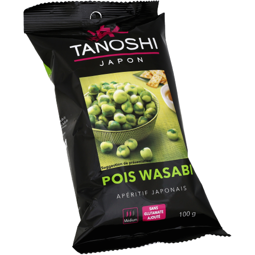
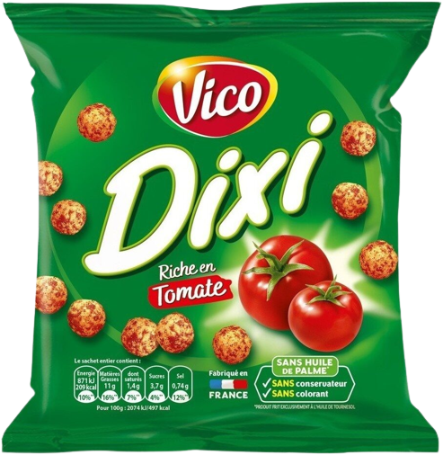
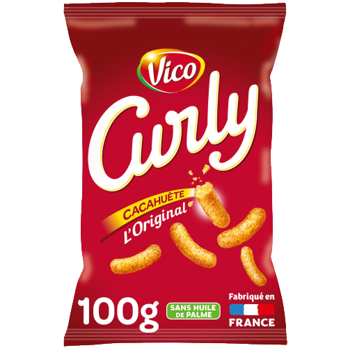
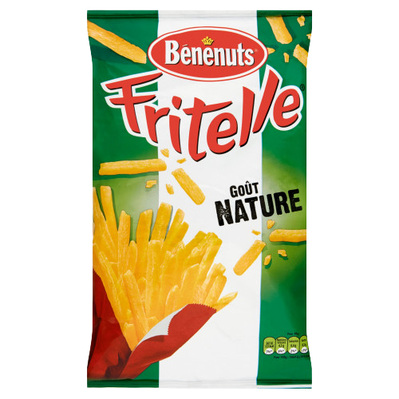
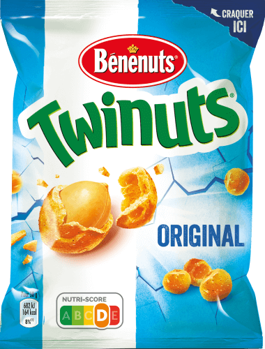

<!DOCTYPE html>
<html lang="en" dir="ltr">
  <head>
    <meta charset="utf-8">
    <title></title>
  </head>
  <body>

  </body>
</html>
<head>
  <link rel="stylesheet" href="style.css">
</head>

<main>


<h1>Top 5 des meilleurs gateaux apéritif</h1>

<table border class="tableau" width=80% align="center">

  <thead>
    <tr align="center">
      <th>Nom</th>
      <th>Description</th>
      <th>Ingrédients</th>
      <th>Nutriscore</th>
      <th>Cliquer pour acheter</th>
    </tr>
  </thead>

  <tbody>
    <tr align="center">
      <td>Petit pois wasabi</td>
      <td>Pois au wasabi pour apéritif.</td>
      <td align="left"><ul>
        <li>Petits pois</li>
        <li>Amidon modifié de maïs</li>
        <li>Sucre</li>
        <li>Sel</li>
        <li>Huile de soja</li>
        <li>Wasabi</li>
      </ul></td>
      <td></td>
      <td><a href="https://www.tanoshi.fr/japon/produit/pois-wasabi/" target="_blank"></a></td>

    </tr>
    <tr align="center">
      <td>Dixi</td>
      <td>Une boule de maïs soufflée croustillante au bon goût de tomate.</td>
      <td align="left"><ul>
        <li>Semoule de maïs </li>
        <li>Arachides grillées </li>
        <li>Huile de tournesol</li>
        <li>Tomate</li>
        <li>Sel</li>
        <li>Paprika</li>
      </ul></td>
      <td></td>
      <td><a href="https://www.vico.fr/produits/dixi-tomate/" target="_blank"></a></td>
    </tr>
    <tr align="center">
      <td>Curly</td>
      <td>La recette historique et inimitable de Curly, pour un plaisir 100% gourmand ! Un goût unique de cacahuète et une texture crousti-fondante légère en bouche… pour un moment de plaisir inégalé !</td>
      <td align="left"><ul>
        <li>Semoule de maïs</li>
        <li>Arachides grillées</li>
        <li>Huile de tournesol</li>
        <li>Sel</li>
        <li>Epices</li>
      </ul></td>
      <td></td>
      <td><a href="https://www.vico.fr/produits/curly-cacahuete-original/" target="_blank"></td>
    </tr>
    <tr align="center">
      <td>Fritelle</td>
      <td>Une délicieuse recette au bon goût de pomme de terre, une texture croustillante et une forme originale de frite, pour toujours plus de plaisir à l'apéritif !</td>
      <td align="left"><ul>
        <li>Semoule de maïs</li>
        <li>Poudre de pomme de terre</li>
        <li>Huile de colza</li>
        <li>sel</li>
        <li>Aromes</li>
      </ul></td>
      <td></td>
      <td><a href="https://www.carrefour.fr/p/biscuits-aperitifs-saveur-nature-lay-s-fritelle-3168930007906" target="_blank"></a></td>
    </tr>
    <tr align="center">
      <td>Twinuts</td>
      <td>Cacahuètes enrobées de biscuit aromatisé goût salé.</td>
      <td align="left"><ul>
        <li>Cacahuètes</li>
        <li>Farine de riz</li>
        <li>Amidon de blé</li>
        <li>Huile de tournesol</li>
        <li>Sucre</li>
      </ul></td>
      <td></td>
      <td><a href="https://www.benenuts.fr/cacahuetes-et-graines-aperitives/twinuts-gout-sale" target="_blank"></a></td>
    </tr>
  </tbody>

  <tfoot>

  </tfoot>

</table>
<br>
<br>
<br>
<br>
<br>
</main>
